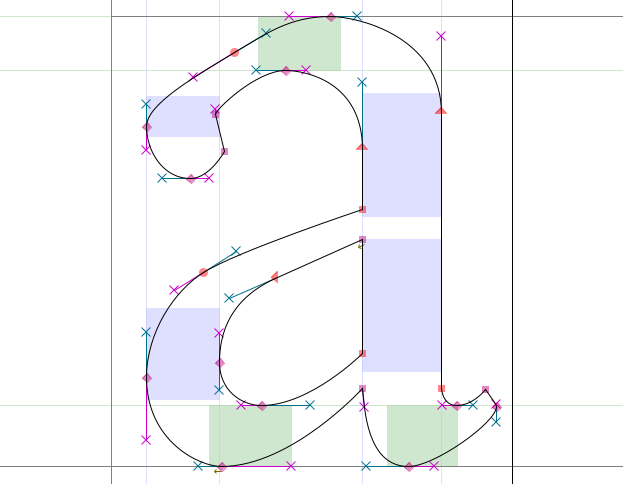
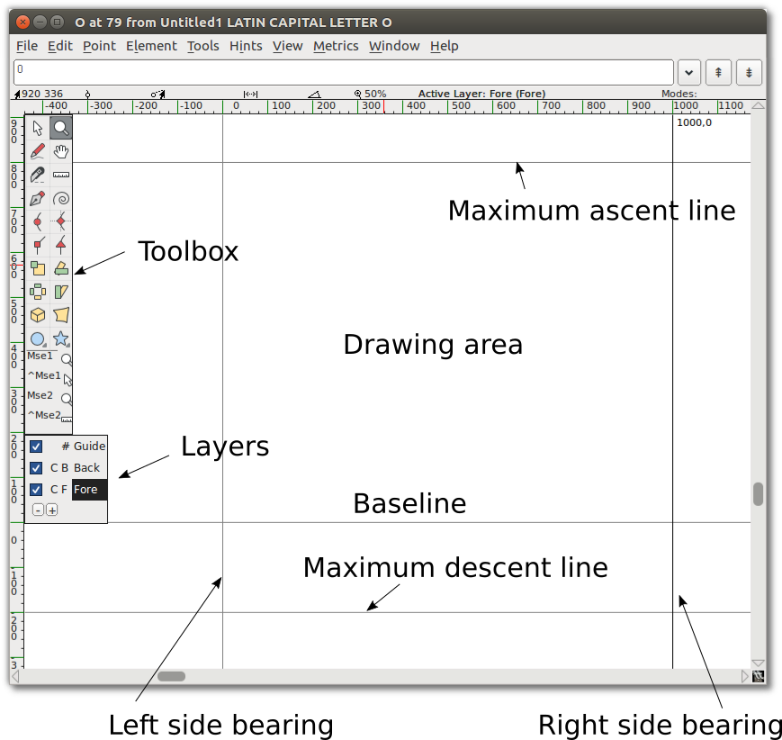
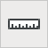

Использование инструментов рисования FontForge
Разработка шрифта в FontForge потребует использования ряда инструментов и утилит, начиная с набора инструментов для рисования, которые могут показаться знакомыми пользователям, имеющим опыт работы с векторной графикой — между ними есть заметные различия. Сначала постараться понять, как работают кривые Безье, прежде чем рассматривать сами инструменты рисования FontForge.
Понимание кривых Безье
Понятие “Bézier curves” относится к конкретному математическому представлению, используемому для создания гладких кривых в цифровом виде. Обычно используются кривые Cubic и Quadratic в порядке — хотя FontForge также поддерживает кривые Spiro, которые являются альтернативным представлением для дизайнера.
В этой главе обсуждаются только пути Cubic, поскольку они обычно используются при рисовании глифов. Пути Spiro будут обсуждаться в следующей главе, а кривые Quadratic встречаются только в шрифтах TrueType и редко используются при рисовании —, они скорее генерируются во время сборки.
Типичный путь B é zier состоит из якоря с двумя маркерами, обозначающими общее направление — Длина каждого маркера определяет длину кривой с каждой стороны — смотреть ниже.
Различные виды точек
Точки кривой (показаны в виде точек круглой формы)
Curve points имеет два маркера, каждый из которых связан с другим, поэтому линия между ними всегда остается прямой, чтобы создать плавную кривую с каждой стороны.

H/V Точки кривой (показаны в виде ромбовидных точек)
H/V curve points ( ‘horizontal/vertical’ ) — вариант точек кривой, которые привязываются к горизонтальной или вертикальной оси —, что является важным инструментом для правильного выполнения форм B é (подробнее об этом в следующем разделе).
Монеты или угловые точки (показаны точками квадратной формы)
Coins может иметь 0, 1 или 2 дескриптора é zier. Положение каждой ручки не зависит от других, что делает ее подходящей для разрывов контура. Без ручек монеты будут иметь прямые линии.


Точки касания (показаны в виде точек треугольной формы или ‘arrowheads’)
Если задача начать с прямой линии, а затем начать плавно изгибаться, нужно использовать tangent points . A tangent оставляет прямую линию с одной стороны, а маркер Bé на другой стороне указывает ее направление —, что обеспечивает непрерывный переход между линией и кривой.

Делать правильно
Чтобы создать правильные кривые — с минимальным количеством контрольных точек и облегченной растеризацией, привязки всегда следует размещать в the extremas of the curve. Однако в тех местах, где в буквенных формах есть разрывы, строка, определяющая путь, должна быть horizontal or vertical .

Note: If your control points aren’t placed at the extremas, FontForge will point out the actual extrema with a sight icon (`⊕`):

Затем можно исправить это, скопировав текущий контур на другой слой, а затем переместив
контрольные точки так, чтобы он был расположен правильно —, в противном случае инструмент
проверки FontForge автоматически добавит точку в экстремумах, и в этот момент можно объединить
неуместную привязку с
Right-click > Merge.
Подробнее об этом будет сказано далее в
главы проверка.
Чтобы уточнить, есть два случая, когда придется отказаться от горизонтальных/вертикальных путей Bézier:
- Если задача изменить общий наклон кривой, как в случае с верхней левой частью ‘a’ ниже,
она остается почти плоской:
 - Если задача разместить разрывы в буквенных формах, как в случае с нижней левой частью ‘g’
ниже —, обычно именно здесь требуется использовать Coin (помимо для рисования линий):

Примечание: Как видно, при установке перерывов с помощью Coin, направление каждого маркера должно быть касательным к кривой, к которой он приходит.
Освоение инструментов рисования FontForge.
В главном окне дважды щелкните одно из полей с глифами, чтобы запустить Glyph Window.

Примечание: The numbers along the top where the x and y axis intersect indicate, from left to right:
- Текущее (x,y) положение курсора на холсте.
- Местоположение последней выбранной точки
- Относительное положение курсора к выбранной точке
- Расстояние между курсором и выбранной точкой
- Угол от выбранной точки до курсора (относительно базовой линии)
- Текущий уровень увеличения, за которым следует имя активного слоя.
Осторожно: Иногда кажется, что FontForge не отвечает, когда положение внутри Glyph Window. Возможно, скрыто открытое диалоговое окно —поэтому просто переместиться и обработать диалоговое окно.
Line состоит из 2 точек.

Spline состоит из 4 точек: 2 конечных точек сплайна и 2 ‘handles’, которые описывают наклон сплайна в этих конечных точках.

Копирование, вставка, вырезание и удаление точек, сплайнов и линий.
Как и большинство программ для рисования, FontForge позволяет Copy, Cut, Paste или Delete любую точку, линию или сплайн. Эти команды доступны в меню «Правка» или с помощью типичных сочетаний клавиш вашей ОС (также отображаются рядом с каждой командой в меню).
Знакомство с инструментами рисования.
Теперь, когда вы знаете, как работать с холстом, пришло время познакомиться с инструментами.
Точка и Масштаб
Point и Zoom ведут себя аналогично эквивалентным инструментам в других приложениях. Указатель — это инструмент выделения, используемый для выбора точек, путей и других объектов на холсте. Zoom tool позволяет легко увеличивать масштаб (Z); для уменьшения масштаба: перейти в меню «Вид» и выбрать Zoom out (X) или Fit.
Обратить внимание, что также можно на мгновение переключиться на инструмент-указатель во время использования другого, удерживая клавишу Ctrl.
Инструмент «От руки»
Инструмент «От руки» позволяет рисовать нестандартные пути.
В области рисования нажать и удерживать, затем переместиться, чтобы нарисовать. Вернуться к инструменту «Указатель», и можно выбирать точки на нарисованном пути.
Когда выбрать одну из точек пути, она превратится в желтый круг. Если выбранная точка находится на кривой, ее контрольные точки будут отображаться с пурпурным и голубым маркером. Можно взять любой маркер и перетащить его, чтобы изменить форму кривой.
Точечные инструменты
Хорошо, теперь перейти к использованию точечных инструментов.

Чтобы добавить точку к пути, сначала выбрать любой из этих инструментов, затем щелкнуть путь и слегка нажать на него. Получить новую точку на линии.
Curve point tool используется для добавления точки в изогнутый сегмент. HVCurve point tool ограничивает новые точки так, чтобы они имели либо горизонтальные, либо вертикальные контрольные точки —, это важно для настройки точек экстремума. Corner point tool позволяет сделать резкий поворот на пути. Tangent point tool позволяет переходить от прямого сегмента к изогнутому сегменту пути.
Pen tool

Pen tool позволяет добавлять точку на кривую и перетаскивать ее контрольные точки.
Spiro

Выбор Spiro tool переводит в режим рисования Spiro. Рисование Spiro позволяет рисовать кривые, которые перестраиваются при изменении положения узлов. Некоторые люди предпочитают этот подход стандартному подходу (известному как редактирование Bézier), но если привычка к редактированию по Безье, обнаружить, что делает некоторые неожиданные вещи.
Knife

Knife tool позволяет разрезать сплайны пополам. Это пригодится, если нарисовать фигуру, но нужна только ее часть.
Ruler

ruler tool предоставляет информацию об измерениях и координатах. При использовании отображается плавающий ‘tooltip’ рядом с курсором. Если навести курсор на точку, всплывающая подсказка предоставит еще более подробную информацию об измерениях и координатах. Если поднести к сплайну, предоставится информация о кривизне и радиусе. Самое полезное, если щелкнуть и перетащить инструмент «Линейка», видно расстояние, на которое перетащить курсор, а также каждое пересечение, через которое растяжение.
Инструменты преобразования
Существует шесть инструментов преобразования:
Примечание: Для всех Transform tools, если дважды щелкнуть инструмент, можно ввести числовые значения.
Scale tool позволяет вручную масштабировать объект. Удерживая нажатой клавишу Shift, можно масштабировать объект, сохраняя при этом его пропорциональное соотношение.
Rotate tool позволяет свободно вращать объект. Вращается выбранный объект вокруг того места, вы первоначальный щелчёк.
Инструмент 3D-поворота позволяет вращать объект в третьем измерении и проецировать результат на плоскость x-y.
Flip tool позволяет перевернуть выделение по горизонтали или по вертикали. Точка, в которой щелкнуть мышью, является исходной точкой преобразования.
Примечание: После переворота точки, вероятно, задача применить Element > Correct Direction.
Skew tool позволяет наклон выделения по горизонтали по часовой стрелке или против часовой стрелки (под углом в диалоге подразумевается движение против часовой стрелки).
Perspective tool дает еще один способ нелинейно исказить форму.
Примечание: Для перспективного преобразования числовой вариант отсутствует.
Rectangle/Ellipse и Polygon/Star tools
Инструменты позволяют рисовать примитивные геометрические фигуры, что быстрее, чем создавать эти фигуры из отдельных сегментов линий.
Нажатием на шеврон на этих инструментах, переключиться на альтернативный инструмент. Если дважды щелкнуть любой из инструментов, открыть параметры типа фигуры.
Rectangle options: угловой стиль и ограничивающая рамка (угол или центр).
Ellipse options: ограничивающая рамка или центр.
Polygon options: количество вершин.
Star options: количество звездочек и глубина баллов в процентах. Чем выше процентное значение, тем длиннее плечи звезды.
Копка мыши 1 и 2

Под панелью инструментов просмотреть текущий инструмент и операции, доступные обеим кнопкам мыши:
- Левая кнопка (КнопкаМыши1)
- Левая кнопка + Ctrl (^КнопкаМыши1)
- Кнопка колеса мыши (КнопкаМыши2)
- Кнопка колеса мыши + Ctrl (^КнопкаМыши2)
Таким образом, использовать несколько разных инструментов без необходимости неоднократно нажимать на панель инструментов.
Осторожно: Похоже, что функциональность КнопокиМыши в настоящее время не работает должным образом.
Слои
По умолчанию холст FontForge имеет три слоя: Guide layer, Background layer и Foreground layer. Guide layers используются для вставки направляющих (например, направляющих высоты X или высоты кепки). Foreground layers и фоновый слои используются для рисования, но в окончательный шрифт будет преобразован только самый верхний слой переднего плана.

Флажок указывает, виден ли каждый слой, и можно снять его, чтобы сделать слой невидимым. C (или Q) указывает, используются ли кривые Cubic или Quadratic.
#, B, или F указывает, является ли тип каждого слоя Guide layer, Background layer, или Foreground layer, что важно, если добавлять больше собственных слоев. Создавать и удалять дополнительные слои с помощью кнопок плюс (+) или минус (−) в этом разделе панели инструментов. Типом слоя и типом кривой также можно управлять, щелкнув правой кнопкой мыши (если есть дополнительные слои).
Базовый чертеж
Далее рассмотреть некоторые основные рабочие процессы рисования, которые вам часто нужны.
Вырезание одной фигуры внутри другой
- Начать с использования Rectangle tool для рисования прямоугольника в области рисования окна Glyph.
- Затем использовать Ellipse tool, чтобы нарисовать эллипс внутри только что нарисованного
прямоугольника.

- Переход в меню Element и выбрать Correct Direction. Видно, что две фигуры слились воедино
и что, по сути, пробить отверстие в центре прямоугольника.

Удалить перекрытие
- Добавить звезду, которая перекрывает угол прямоугольника.

- Выбрать звезду и более раннюю фигуру. Нужен выбор только одной точки каждой перекрывающейся фигуры, но можно выбрать дополнительные точки.
- Переход к Element >Overlap > Remove overlap. Видно, что две фигуры стали одной.

Добавить Точку
Использовать Pen tool, щелкнуть и удерживать середину сегмента линии, затем перетащить мышь, чтобы изменить форму.

Tangent точки
Выбрать нижнюю левую угловую точку новой фигуры (пересечение кривой и прямой линии). Из Point menu видно, что Corner Point отмечен. Выбрать Tangent. Изменит квадратный узел на треугольник, но это все, что произойдет, пока не сделан следующий шаг: расширение контрольных точек.
Для этого выбрать Element > Get Info, что откроет файл Point Info Window. На вкладке Location в этом окне перейти к набору полей Next CP и установить для Distance большое число, например 75. Нажать OK. Видно, что кривая теперь плавно переходит в прямую линию.

Трансформация
Теперь выделить примерно четверть формы — звезды и часть эллипса посередине.

Выбрать 3D Rotate tool, переместить в середину выделенной области, медленно щелкнуть и перетащить, пока не увидить то, что нравится, затем отпустить. Вот пример 3D Rotate, использованного на тренировочном изображении:

Установить форму и ширину обводки
До сих пор использовалось Freehand drawing tool для рисования линии. Если дважды щелкнуть Freehand tool, получить показанный здесь Freehand dialog, который содержит окно рисования. Здесь выбрать форму и размер пера. Диалоговое окно также появляется, когда выбирается опция Expand Stroke в меню Element.
Используя Corner tool, нарисовать многоугольник и нажать ОК.
Теперь нарисовать линию с помощью Freehand drawing tool. Когда отпускается кнопка мыши, новый путь автоматически приобретает форму, выбранную в Freehand dialog, как показано здесь.

Keep drawing!
Следует продолжать экспериментировать с инструментами рисования до тех пор, пока не почувствовать, что можно использовать их для рисования и преобразования любых необходимых фигур. На этом этапе готовность приступить к созданию компонентов глифов, но также следует потратить время на изучение другого набора инструментов FontForge. Следующая глава, [“Рисование со Спиро”], описывается режим Spiro drawing. Spiro drawing настолько отличается от редактирования кривой Bézier, что требует отдельного объяснения.
Дальнейшее чтение
A Форум TypeDrawers Обсуждение Безье включены эти ссылки, которыми поделилась Нина Штёссингер on twitter:
- Кривые Безье и шрифтовой дизайн: A Tutorial Фабио Дуарте Мартинс
- Так в чем же особенность горизонтальных & вертикальных маркеров Безье?
- Ручная надпись: Как векторизировать буквы Скотт Бирсак
- Тип Основы от Underware
- Игра Безье Марк Маккей